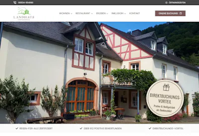
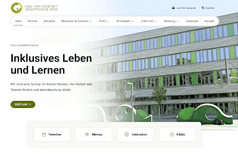

Websites für Schulen
Übersichtliche und barrierearme Schulwebsites mit WordPress. Navigation, Termine, Vertretungspläne und Datenschutz werden von Anfang an mitgedacht.
Webdesign für Schulen →Webdesign · WordPress · SEO
Ich entwickle Websites für Schulen, Handwerksbetriebe und KMU – klar strukturiert, schnell und mit SEO von Anfang an mitgedacht. Dazu optimiere ich bestehende Seiten und entwickle fokussierte Landingpages.
Ohne endloses Hin und Her • Klarer Prozess • Festpreise
Drei Leistungen, ein gemeinsamer Ansatz: Eine Website soll verständlich sein, technisch sauber funktionieren und ihre Aufgabe erfüllen.
Übersichtliche und barrierearme Schulwebsites mit WordPress. Navigation, Termine, Vertretungspläne und Datenschutz werden von Anfang an mitgedacht.
Webdesign für Schulen →Individuelle Websites für Selbstständige, Handwerksbetriebe und kleine Unternehmen.
Klar aufgebaut, mobil schnell und mit einer soliden SEO-Basis.
Bestehende Websites gezielt verbessern oder fokussierte Seiten für einzelne Leistungen und Kampagnen entwickeln – mit Blick auf Technik, Inhalt und Nutzerführung.
Website optimieren lassen →Gutes Design ist wichtig. Ebenso wichtig sind eine verständliche Struktur, schnelle Ladezeiten, saubere Technik und Inhalte, die Menschen und Suchmaschinen gut einordnen können. Deshalb denke ich Gestaltung, SEO-Grundlagen, Barrierefreiheit und Nutzerführung zusammen.
Keine Hochglanz-Mockups, sondern echte Webprojekte. Ein kleiner Einblick in fertige Websites. Siehe auch meine Referenzprojekte.

Konzeption und Website für einen Gastgeberbetrieb – übersichtlich, mobil optimiert und einfach zu pflegen.

Neustrukturierung und barrierearme WordPress-Website für eine Gesamtschule – mit klarer Navigation und einfacher Pflege.
Aussehen zur Zeit der Fertigstellung der Projekte, Abweichungen ggü. aktuellem Zustand möglich.
SeitenMachen ist das Ein-Personen-Studio in Eppingen, Baden-Württemberg. Der Fokus liegt auf WordPress-Websites mit SEO-Basis für Schulen, Handwerksbetriebe und kleine bis mittlere Unternehmen im DACH-Raum – individuell entworfen statt aus dem Baukasten, mit Festpreis statt versteckter Kosten.
Sie schreiben, was Sie vorhaben. Ich sage Ihnen, ob ich helfen kann und was der nächste Schritt ist.